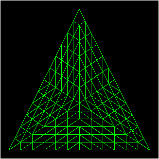
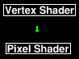
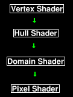
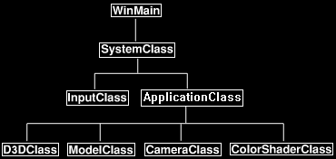

Hardware tessellation is one of the new features of DirectX 11 that was unavailable in previous versions.
This tutorial will cover how to perform tessellation using DirectX 11 with HLSL and C++.

Previously to tessellate models, terrain, and such you would need to do the subdivision of the polygon mesh in software.
Once the subdivision was complete you would send the large number of polygons you generated to the video card.
However, this method of tessellation was inefficient and created a rendering performance bottleneck.
But now with DirectX 11 and shader model 5 you can send your base polygon mesh to the video card and then instruct the video card to perform your specific subdivision algorithm in the hardware.
You are given complete control over the programming of the subdivision by use of the new programmable hull and domain shaders.
For most of the tutorials we usually just write a vertex and pixel shader.
And although there are many stages in the graphics pipeline our concern has just been those two programmable pieces.
So usually, our program flow would look like the following:

With the addition of a programmable hull and domain shader we now write four shader programs instead of two to achieve hardware tessellation.
In simple terms the main change is that the programmable vertex shader has been broken into three parts.
These three parts are the vertex shader, the hull shader, and the domain shader.
Tessellation occurs between the hull and the domain shader.
The pixel shader remains as it was.
So, our updated program flow will now look like the following:

Also, instead of sending triangle lists to the video card we now send patch lists.
A patch is a primitive made up of control points.
For example, if we send a single triangle to the video card it is considered a single patch with three control points.
The process can be very complicated but I am going to present just the basics of tessellation for this tutorial.
We will be modifying tutorial 4 and tessellating the single green triangle into a triangle mesh made of many vertices.
We will start first by looking at how we modify the color vertex shader from tutorial 4 to implement hardware tessellation.
Framework
We will be using the same framework as tutorial 4:

Color.vs
////////////////////////////////////////////////////////////////////////////////
// Filename: color.vs
////////////////////////////////////////////////////////////////////////////////
/////////////
// GLOBALS //
/////////////
cbuffer MatrixBuffer
{
matrix worldMatrix;
matrix viewMatrix;
matrix projectionMatrix;
};
//////////////
// TYPEDEFS //
//////////////
struct VertexInputType
{
float4 position : POSITION;
float4 color : COLOR;
};
The first change to the vertex shader is the output structure.
Previously the output was sent to the pixel shader, now the output goes to the hull shader instead.
struct HullInputType
{
float3 position : POSITION;
float4 color : COLOR;
};
////////////////////////////////////////////////////////////////////////////////
// Vertex Shader
////////////////////////////////////////////////////////////////////////////////
HullInputType ColorVertexShader(VertexInputType input)
{
HullInputType output;
In the vertex shader we pass the vertices and color data through to the hull shader.
Since the vertices will be increasing with the tessellation, we now do the transforming and such in the domain shader.
The vertex shader's purpose is now just for vertex animation and passing data into the hull shader.
// Pass the vertex position into the hull shader.
output.position = input.position;
// Pass the input color into the hull shader.
output.color = input.color;
return output;
}
Color.hs
The HLSL hull shader is made up of two parts, a patch constant function and the hull shader itself.
////////////////////////////////////////////////////////////////////////////////
// Filename: color.hs
////////////////////////////////////////////////////////////////////////////////
/////////////
// GLOBALS //
/////////////
The tessellation constant buffer defined here provides the shader with the tessellation factor we want to supply the tessellator with.
This is set in the ColorShaderClass object before rendering.
cbuffer TessellationBuffer
{
float tessellationAmount;
float3 padding;
};
//////////////
// TYPEDEFS //
//////////////
The HullInputType structure is the same as the output structure from the vertex shader.
struct HullInputType
{
float3 position : POSITION;
float4 color : COLOR;
};
The ConstantOutputType structure is what will be the output from the patch constant function.
struct ConstantOutputType
{
float edges[3] : SV_TessFactor;
float inside : SV_InsideTessFactor;
};
The HullOutputType structure is what will be the output from the hull shader.
struct HullOutputType
{
float3 position : POSITION;
float4 color : COLOR;
};
ColorPatchConstantFunction is the patch constant function that gets called by the hull shader.
It receives as input the patch and the id of the patch that will be tessellated.
The function is used to set/calculate any data that is constant for the entire patch.
In the example here we set the tessellation factor for the three edges of the triangle and the inside center point of the triangle.
We set all four factors to the tessellationAmount that comes in from the ColorShaderClass object.
This function is called by the hull shader and its output is passed into the tessellator.
////////////////////////////////////////////////////////////////////////////////
// Patch Constant Function
////////////////////////////////////////////////////////////////////////////////
ConstantOutputType ColorPatchConstantFunction(InputPatch inputPatch, uint patchId : SV_PrimitiveID)
{
ConstantOutputType output;
// Set the tessellation factors for the three edges of the triangle.
output.edges[0] = tessellationAmount;
output.edges[1] = tessellationAmount;
output.edges[2] = tessellationAmount;
// Set the tessellation factor for tessallating inside the triangle.
output.inside = tessellationAmount;
return output;
}
The hull shader is called for each output control point.
It also calls the patch constant function.
The hull shader receives as input the patch, the id of the control point, and the patch id.
In the example here we simply pass the color and control points to the domain shader, however you could do more computing and manipulation with the control points if you wanted to.
You will also notice a small header to the hull shader which defines the attributes.
The first attribute is the domain which is the patch type, in this case we are working with triangles.
The second attribute is the tessellation partitioning type, we use integers for this example.
The third attribute is the primitive type that will be outputted from the tessellator, here we choose triangles.
The fourth attribute is the number of control points that we will be outputting.
In this example we are just passing out three control points for each patch.
And the final attribute is the name of the constant function that the hull shader will call for setting the patch constant data which is the input to the tessellator.
////////////////////////////////////////////////////////////////////////////////
// Hull Shader
////////////////////////////////////////////////////////////////////////////////
[domain("tri")]
[partitioning("integer")]
[outputtopology("triangle_cw")]
[outputcontrolpoints(3)]
[patchconstantfunc("ColorPatchConstantFunction")]
HullOutputType ColorHullShader(InputPatch patch, uint pointId : SV_OutputControlPointID, uint patchId : SV_PrimitiveID)
{
HullOutputType output;
// Set the position for this control point as the output position.
output.position = patch[pointId].position;
// Set the input color as the output color.
output.color = patch[pointId].color;
return output;
}
Color.ds
The domain shader is what receives the tessellated data and is then used to manipulate and transform the final vertices just like how we previously used to do so in the vertex shader.
////////////////////////////////////////////////////////////////////////////////
// Filename: color.ds
////////////////////////////////////////////////////////////////////////////////
/////////////
// GLOBALS //
/////////////
We have a matrix buffer just like the previous tutorial except it is now in the domain shader instead of the vertex shader.
This is because we need to transform the tessellated data, not the un-tessellated input vertices.
cbuffer MatrixBuffer
{
matrix worldMatrix;
matrix viewMatrix;
matrix projectionMatrix;
};
//////////////
// TYPEDEFS //
//////////////
The domain shader needs the two output structures from the hull shader as these will be inputs to the domain shader.
struct ConstantOutputType
{
float edges[3] : SV_TessFactor;
float inside : SV_InsideTessFactor;
};
struct HullOutputType
{
float3 position : POSITION;
float4 color : COLOR;
};
The output of the domain shader goes to the pixel shader.
This was previously in the vertex shader in the original tutorial that we are modifying.
struct PixelInputType
{
float4 position : SV_POSITION;
float4 color : COLOR;
};
The domain shader has a single domain attribute.
In this example we are setting for triangle patches.
The inputs to the domain shader are the outputs from the hull shader and constant function.
The uvwCoords are the weights from the tessellator which indicate how much each control point contributes to the location of the new vertex.
U is for the first control point, V is for the second control point, and W is for the third.
In this example all three control points give an even amount of weight to the new vertice so it is placed in the mid point of the three.
You can see the calculation in the first line in the shader.
And once we have the new vertex location, we transform it as usual and pass it and the color into the pixel shader.
////////////////////////////////////////////////////////////////////////////////
// Domain Shader
////////////////////////////////////////////////////////////////////////////////
[domain("tri")]
PixelInputType ColorDomainShader(ConstantOutputType input, float3 uvwCoord : SV_DomainLocation, const OutputPatch patch)
{
float3 vertexPosition;
PixelInputType output;
// Determine the position of the new vertex.
vertexPosition = uvwCoord.x * patch[0].position + uvwCoord.y * patch[1].position + uvwCoord.z * patch[2].position;
// Calculate the position of the new vertex against the world, view, and projection matrices.
output.position = mul(float4(vertexPosition, 1.0f), worldMatrix);
output.position = mul(output.position, viewMatrix);
output.position = mul(output.position, projectionMatrix);
// Send the input color into the pixel shader.
output.color = patch[0].color;
return output;
}
Color.ps
The pixel shader remains the same as it was in the original colored triangle tutorial.
////////////////////////////////////////////////////////////////////////////////
// Filename: color.ps
////////////////////////////////////////////////////////////////////////////////
//////////////
// TYPEDEFS //
//////////////
struct PixelInputType
{
float4 position : SV_POSITION;
float4 color : COLOR;
};
////////////////////////////////////////////////////////////////////////////////
// Pixel Shader
////////////////////////////////////////////////////////////////////////////////
float4 ColorPixelShader(PixelInputType input) : SV_TARGET
{
return input.color;
}
Colorshaderclass.h
The ColorShaderClass has been modified to handle tessellation.
////////////////////////////////////////////////////////////////////////////////
// Filename: colorshaderclass.h
////////////////////////////////////////////////////////////////////////////////
#ifndef _COLORSHADERCLASS_H_
#define _COLORSHADERCLASS_H_
//////////////
// INCLUDES //
//////////////
#include <d3d11.h>
#include <d3dcompiler.h>
#include <directxmath.h>
#include <fstream>
using namespace DirectX;
using namespace std;
////////////////////////////////////////////////////////////////////////////////
// Class name: ColorShaderClass
////////////////////////////////////////////////////////////////////////////////
class ColorShaderClass
{
private:
struct MatrixBufferType
{
XMMATRIX world;
XMMATRIX view;
XMMATRIX projection;
};
We have a new structure for the tessellation buffer that will be used for setting the tessellation amount in the hull shader.
struct TessellationBufferType
{
float tessellationAmount;
XMFLOAT3 padding;
};
public:
ColorShaderClass();
ColorShaderClass(const ColorShaderClass&);
~ColorShaderClass();
bool Initialize(ID3D11Device*, HWND);
void Shutdown();
bool Render(ID3D11DeviceContext*, int, XMMATRIX, XMMATRIX, XMMATRIX, float);
private:
bool InitializeShader(ID3D11Device*, HWND, WCHAR*, WCHAR*, WCHAR*, WCHAR*);
void ShutdownShader();
void OutputShaderErrorMessage(ID3D10Blob*, HWND, WCHAR*);
bool SetShaderParameters(ID3D11DeviceContext*, XMMATRIX, XMMATRIX, XMMATRIX, float);
void RenderShader(ID3D11DeviceContext*, int);
private:
ID3D11VertexShader* m_vertexShader;
There will now be a hull and domain shader used by the ColorShaderClass.
ID3D11HullShader* m_hullShader;
ID3D11DomainShader* m_domainShader;
ID3D11PixelShader* m_pixelShader;
ID3D11InputLayout* m_layout;
ID3D11Buffer* m_matrixBuffer;
We have a new buffer also for the tessellation amount that will be set in the hull shader.
ID3D11Buffer* m_tessellationBuffer;
};
#endif
Colorshaderclass.cpp
////////////////////////////////////////////////////////////////////////////////
// Filename: colorshaderclass.cpp
////////////////////////////////////////////////////////////////////////////////
#include "colorshaderclass.h"
The new domain and hull shader as well as the new tessellation buffer pointers are set to null in the class constructor.
ColorShaderClass::ColorShaderClass()
{
m_vertexShader = 0;
m_hullShader = 0;
m_domainShader = 0;
m_pixelShader = 0;
m_layout = 0;
m_matrixBuffer = 0;
m_tessellationBuffer = 0;
}
ColorShaderClass::ColorShaderClass(const ColorShaderClass& other)
{
}
ColorShaderClass::~ColorShaderClass()
{
}
bool ColorShaderClass::Initialize(ID3D11Device* device, HWND hwnd)
{
wchar_t vsFilename[128], hsFilename[128], dsFilename[128], psFilename[128];
int error;
bool result;
The InitializeShader function now takes the four shader file names as input.
You can combine all the shaders into a single text file but I have separated them for clarity.
// Set the filename of the vertex shader.
error = wcscpy_s(vsFilename, 128, L"../Engine/color.vs");
if(error != 0)
{
return false;
}
// Set the filename of the hull shader.
error = wcscpy_s(hsFilename, 128, L"../Engine/color.hs");
if(error != 0)
{
return false;
}
// Set the filename of the domain shader.
error = wcscpy_s(dsFilename, 128, L"../Engine/color.ds");
if(error != 0)
{
return false;
}
// Set the filename of the pixel shader.
error = wcscpy_s(psFilename, 128, L"../Engine/color.ps");
if(error != 0)
{
return false;
}
// Initialize the vertex, hull, domain, and pixel shaders.
result = InitializeShader(device, hwnd, vsFilename, hsFilename, dsFilename, psFilename);
if(!result)
{
return false;
}
return true;
}
void ColorShaderClass::Shutdown()
{
// Shutdown the vertex and pixel shaders as well as the related objects.
ShutdownShader();
return;
}
The input to the Render function now includes a tessellation amount which sets how much the triangle should be tessellated.
The tessellation amount is then passed into the RenderShader function.
bool ColorShaderClass::Render(ID3D11DeviceContext* deviceContext, int indexCount, XMMATRIX worldMatrix, XMMATRIX viewMatrix,
XMMATRIX projectionMatrix, float tessellationAmount)
{
bool result;
// Set the shader parameters that it will use for rendering.
result = SetShaderParameters(deviceContext, worldMatrix, viewMatrix, projectionMatrix, tessellationAmount);
if(!result)
{
return false;
}
// Now render the prepared buffers with the shader.
RenderShader(deviceContext, indexCount);
return true;
}
The InitializeShader function has been expanded to also handle hull and domain shaders.
bool ColorShaderClass::InitializeShader(ID3D11Device* device, HWND hwnd, WCHAR* vsFilename, WCHAR* hsFilename, WCHAR* dsFilename, WCHAR* psFilename)
{
HRESULT result;
ID3D10Blob* errorMessage;
ID3D10Blob* vertexShaderBuffer;
We have to new ID3D10Blob pointers to hold the HLSL shader code so that they can be compiled.
ID3D10Blob* hullShaderBuffer;
ID3D10Blob* domainShaderBuffer;
ID3D10Blob* pixelShaderBuffer;
D3D11_INPUT_ELEMENT_DESC polygonLayout[2];
unsigned int numElements;
D3D11_BUFFER_DESC matrixBufferDesc;
There is also a new buffer description variable for the tessellation constant buffer in the hull shader.
D3D11_BUFFER_DESC tessellationBufferDesc;
// Initialize the pointers this function will use to null.
errorMessage = 0;
vertexShaderBuffer = 0;
hullShaderBuffer = 0;
domainShaderBuffer = 0;
pixelShaderBuffer = 0;
// Compile the vertex shader code.
result = D3DCompileFromFile(vsFilename, NULL, NULL, "ColorVertexShader", "vs_5_0", D3D10_SHADER_ENABLE_STRICTNESS, 0,
&vertexShaderBuffer, &errorMessage);
if(FAILED(result))
{
// If the shader failed to compile it should have writen something to the error message.
if(errorMessage)
{
OutputShaderErrorMessage(errorMessage, hwnd, vsFilename);
}
// If there was nothing in the error message then it simply could not find the shader file itself.
else
{
MessageBox(hwnd, vsFilename, L"Missing Shader File", MB_OK);
}
return false;
}
Here is where we compile the hull shader HLSL code.
// Compile the hull shader code.
result = D3DCompileFromFile(hsFilename, NULL, NULL, "ColorHullShader", "hs_5_0", D3D10_SHADER_ENABLE_STRICTNESS, 0,
&hullShaderBuffer, &errorMessage);
if(FAILED(result))
{
// If the shader failed to compile it should have writen something to the error message.
if(errorMessage)
{
OutputShaderErrorMessage(errorMessage, hwnd, hsFilename);
}
// If there was nothing in the error message then it simply could not find the shader file itself.
else
{
MessageBox(hwnd, hsFilename, L"Missing Shader File", MB_OK);
}
return false;
}
And after that we compile the domain shader HLSL code.
// Compile the domain shader code.
result = D3DCompileFromFile(dsFilename, NULL, NULL, "ColorDomainShader", "ds_5_0", D3D10_SHADER_ENABLE_STRICTNESS, 0,
&domainShaderBuffer, &errorMessage);
if(FAILED(result))
{
// If the shader failed to compile it should have writen something to the error message.
if(errorMessage)
{
OutputShaderErrorMessage(errorMessage, hwnd, dsFilename);
}
// If there was nothing in the error message then it simply could not find the shader file itself.
else
{
MessageBox(hwnd, dsFilename, L"Missing Shader File", MB_OK);
}
return false;
}
// Compile the pixel shader code.
result = D3DCompileFromFile(psFilename, NULL, NULL, "ColorPixelShader", "ps_5_0", D3D10_SHADER_ENABLE_STRICTNESS, 0,
&pixelShaderBuffer, &errorMessage);
if(FAILED(result))
{
// If the shader failed to compile it should have writen something to the error message.
if(errorMessage)
{
OutputShaderErrorMessage(errorMessage, hwnd, psFilename);
}
// If there was nothing in the error message then it simply could not find the file itself.
else
{
MessageBox(hwnd, psFilename, L"Missing Shader File", MB_OK);
}
return false;
}
// Create the vertex shader from the buffer.
result = device->CreateVertexShader(vertexShaderBuffer->GetBufferPointer(), vertexShaderBuffer->GetBufferSize(), NULL, &m_vertexShader);
if(FAILED(result))
{
return false;
}
Create the hull and domain shaders from the compiled HLSL buffers.
// Create the hull shader from the buffer.
result = device->CreateHullShader(hullShaderBuffer->GetBufferPointer(), hullShaderBuffer->GetBufferSize(), NULL, &m_hullShader);
if(FAILED(result))
{
return false;
}
// Create the domain shader from the buffer.
result = device->CreateDomainShader(domainShaderBuffer->GetBufferPointer(), domainShaderBuffer->GetBufferSize(), NULL, &m_domainShader);
if(FAILED(result))
{
return false;
}
// Create the pixel shader from the buffer.
result = device->CreatePixelShader(pixelShaderBuffer->GetBufferPointer(), pixelShaderBuffer->GetBufferSize(), NULL, &m_pixelShader);
if(FAILED(result))
{
return false;
}
// Create the vertex input layout description.
polygonLayout[0].SemanticName = "POSITION";
polygonLayout[0].SemanticIndex = 0;
polygonLayout[0].Format = DXGI_FORMAT_R32G32B32_FLOAT;
polygonLayout[0].InputSlot = 0;
polygonLayout[0].AlignedByteOffset = 0;
polygonLayout[0].InputSlotClass = D3D11_INPUT_PER_VERTEX_DATA;
polygonLayout[0].InstanceDataStepRate = 0;
polygonLayout[1].SemanticName = "COLOR";
polygonLayout[1].SemanticIndex = 0;
polygonLayout[1].Format = DXGI_FORMAT_R32G32B32A32_FLOAT;
polygonLayout[1].InputSlot = 0;
polygonLayout[1].AlignedByteOffset = D3D11_APPEND_ALIGNED_ELEMENT;
polygonLayout[1].InputSlotClass = D3D11_INPUT_PER_VERTEX_DATA;
polygonLayout[1].InstanceDataStepRate = 0;
// Get a count of the elements in the layout.
numElements = sizeof(polygonLayout) / sizeof(polygonLayout[0]);
// Create the vertex input layout.
result = device->CreateInputLayout(polygonLayout, numElements, vertexShaderBuffer->GetBufferPointer(),
vertexShaderBuffer->GetBufferSize(), &m_layout);
if(FAILED(result))
{
return false;
}
// Release the vertex shader buffer and pixel shader buffer since they are no longer needed.
vertexShaderBuffer->Release();
vertexShaderBuffer = 0;
pixelShaderBuffer->Release();
pixelShaderBuffer = 0;
// Setup the description of the dynamic matrix constant buffer that is in the vertex shader.
matrixBufferDesc.Usage = D3D11_USAGE_DYNAMIC;
matrixBufferDesc.ByteWidth = sizeof(MatrixBufferType);
matrixBufferDesc.BindFlags = D3D11_BIND_CONSTANT_BUFFER;
matrixBufferDesc.CPUAccessFlags = D3D11_CPU_ACCESS_WRITE;
matrixBufferDesc.MiscFlags = 0;
matrixBufferDesc.StructureByteStride = 0;
// Create the constant buffer pointer so we can access the vertex shader constant buffer from within this class.
result = device->CreateBuffer(&matrixBufferDesc, NULL, &m_matrixBuffer);
if(FAILED(result))
{
return false;
}
We setup the new tessellation constant buffer here.
// Setup the description of the dynamic tessellation constant buffer that is in the hull shader.
tessellationBufferDesc.Usage = D3D11_USAGE_DYNAMIC;
tessellationBufferDesc.ByteWidth = sizeof(TessellationBufferType);
tessellationBufferDesc.BindFlags = D3D11_BIND_CONSTANT_BUFFER;
tessellationBufferDesc.CPUAccessFlags = D3D11_CPU_ACCESS_WRITE;
tessellationBufferDesc.MiscFlags = 0;
tessellationBufferDesc.StructureByteStride = 0;
// Create the constant buffer pointer so we can access the hull shader constant buffer from within this class.
result = device->CreateBuffer(&tessellationBufferDesc, NULL, &m_tessellationBuffer);
if(FAILED(result))
{
return false;
}
return true;
}
void ColorShaderClass::ShutdownShader()
{
Release the new tessellation buffer here in the ShutdownShader function.
// Release the tessellation constant buffer.
if(m_tessellationBuffer)
{
m_tessellationBuffer->Release();
m_tessellationBuffer = 0;
}
// Release the matrix constant buffer.
if(m_matrixBuffer)
{
m_matrixBuffer->Release();
m_matrixBuffer = 0;
}
// Release the layout.
if(m_layout)
{
m_layout->Release();
m_layout = 0;
}
// Release the pixel shader.
if(m_pixelShader)
{
m_pixelShader->Release();
m_pixelShader = 0;
}
And also release the hull and domain shader in the ShutdownShader function.
// Release the domain shader.
if(m_domainShader)
{
m_domainShader->Release();
m_domainShader = 0;
}
// Release the hull shader.
if(m_hullShader)
{
m_hullShader->Release();
m_hullShader = 0;
}
// Release the vertex shader.
if(m_vertexShader)
{
m_vertexShader->Release();
m_vertexShader = 0;
}
return;
}
void ColorShaderClass::OutputShaderErrorMessage(ID3D10Blob* errorMessage, HWND hwnd, WCHAR* shaderFilename)
{
char* compileErrors;
unsigned long long bufferSize, i;
ofstream fout;
// Get a pointer to the error message text buffer.
compileErrors = (char*)(errorMessage->GetBufferPointer());
// Get the length of the message.
bufferSize = errorMessage->GetBufferSize();
// Open a file to write the error message to.
fout.open("shader-error.txt");
// Write out the error message.
for(i=0; i<bufferSize; i++)
{
fout << compileErrors[i];
}
// Close the file.
fout.close();
// Release the error message.
errorMessage->Release();
errorMessage = 0;
// Pop a message up on the screen to notify the user to check the text file for compile errors.
MessageBox(hwnd, L"Error compiling shader. Check shader-error.txt for message.", shaderFilename, MB_OK);
return;
}
The SetShaderParameters function has been modified since the matrices are now set in the domain shader and the new tessellation amount is set in the hull shader.
bool ColorShaderClass::SetShaderParameters(ID3D11DeviceContext* deviceContext, XMMATRIX worldMatrix, XMMATRIX viewMatrix,
XMMATRIX projectionMatrix, float tessellationAmount)
{
HRESULT result;
D3D11_MAPPED_SUBRESOURCE mappedResource;
MatrixBufferType* dataPtr;
unsigned int bufferNumber;
TessellationBufferType* dataPtr2;
// Transpose the matrices to prepare them for the shader.
worldMatrix = XMMatrixTranspose(worldMatrix);
viewMatrix = XMMatrixTranspose(viewMatrix);
projectionMatrix = XMMatrixTranspose(projectionMatrix);
// Lock the constant buffer so it can be written to.
result = deviceContext->Map(m_matrixBuffer, 0, D3D11_MAP_WRITE_DISCARD, 0, &mappedResource);
if(FAILED(result))
{
return false;
}
// Get a pointer to the data in the constant buffer.
dataPtr = (MatrixBufferType*)mappedResource.pData;
// Copy the matrices into the constant buffer.
dataPtr->world = worldMatrix;
dataPtr->view = viewMatrix;
dataPtr->projection = projectionMatrix;
// Unlock the constant buffer.
deviceContext->Unmap(m_matrixBuffer, 0);
// Set the position of the constant buffer in the vertex shader.
bufferNumber = 0;
Set the matrices in the domain shader instead of the vertex shader.
// Finally set the matrix constant buffer in the domain shader with the updated values.
deviceContext->DSSetConstantBuffers(bufferNumber, 1, &m_matrixBuffer);
The new tessellation constant buffer that is in the hull shader is set here.
// Lock the tessellation constant buffer so it can be written to.
result = deviceContext->Map(m_tessellationBuffer, 0, D3D11_MAP_WRITE_DISCARD, 0, &mappedResource);
if(FAILED(result))
{
return false;
}
// Get a pointer to the data in the tessellation constant buffer.
dataPtr2 = (TessellationBufferType*)mappedResource.pData;
// Copy the tessellation data into the constant buffer.
dataPtr2->tessellationAmount = tessellationAmount;
dataPtr2->padding = XMFLOAT3(0.0f, 0.0f, 0.0f);
// Unlock the tessellation constant buffer.
deviceContext->Unmap(m_tessellationBuffer, 0);
// Set the position of the tessellation constant buffer in the hull shader.
bufferNumber = 0;
// Now set the tessellation constant buffer in the hull shader with the updated values.
deviceContext->HSSetConstantBuffers(bufferNumber, 1, &m_tessellationBuffer);
return true;
}
void ColorShaderClass::RenderShader(ID3D11DeviceContext* deviceContext, int indexCount)
{
// Set the vertex input layout.
deviceContext->IASetInputLayout(m_layout);
We also now set the hull and domain shader in the RenderShader function.
// Set the vertex, hull, domain, and pixel shaders that will be used to render this triangle.
deviceContext->VSSetShader(m_vertexShader, NULL, 0);
deviceContext->HSSetShader(m_hullShader, NULL, 0);
deviceContext->DSSetShader(m_domainShader, NULL, 0);
deviceContext->PSSetShader(m_pixelShader, NULL, 0);
// Render the triangle.
deviceContext->DrawIndexed(indexCount, 0, 0);
return;
}
Modelclass.h
The header file for the ModelClass has not been modified from the original tutorial.
////////////////////////////////////////////////////////////////////////////////
// Filename: modelclass.h
////////////////////////////////////////////////////////////////////////////////
#ifndef _MODELCLASS_H_
#define _MODELCLASS_H_
//////////////
// INCLUDES //
//////////////
#include <d3d11.h>
#include <directxmath.h>
#include <fstream>
using namespace DirectX;
using namespace std;
////////////////////////////////////////////////////////////////////////////////
// Class name: ModelClass
////////////////////////////////////////////////////////////////////////////////
class ModelClass
{
private:
struct VertexType
{
XMFLOAT3 position;
XMFLOAT4 color;
};
public:
ModelClass();
ModelClass(const ModelClass&);
~ModelClass();
bool Initialize(ID3D11Device*);
void Shutdown();
void Render(ID3D11DeviceContext*);
int GetIndexCount();
private:
bool InitializeBuffers(ID3D11Device*);
void ShutdownBuffers();
void RenderBuffers(ID3D11DeviceContext*);
private:
ID3D11Buffer *m_vertexBuffer, *m_indexBuffer;
int m_vertexCount, m_indexCount;
};
#endif
Modelclass.cpp
////////////////////////////////////////////////////////////////////////////////
// Filename: modelclass.cpp
////////////////////////////////////////////////////////////////////////////////
#include "modelclass.h"
ModelClass::ModelClass()
{
m_vertexBuffer = 0;
m_indexBuffer = 0;
}
ModelClass::ModelClass(const ModelClass& other)
{
}
ModelClass::~ModelClass()
{
}
bool ModelClass::Initialize(ID3D11Device* device)
{
bool result;
// Initialize the vertex and index buffers.
result = InitializeBuffers(device);
if(!result)
{
return false;
}
return true;
}
void ModelClass::Shutdown()
{
// Shutdown the vertex and index buffers.
ShutdownBuffers();
return;
}
void ModelClass::Render(ID3D11DeviceContext* deviceContext)
{
// Put the vertex and index buffers on the graphics pipeline to prepare them for drawing.
RenderBuffers(deviceContext);
return;
}
int ModelClass::GetIndexCount()
{
return m_indexCount;
}
bool ModelClass::InitializeBuffers(ID3D11Device* device)
{
VertexType* vertices;
unsigned long* indices;
D3D11_BUFFER_DESC vertexBufferDesc, indexBufferDesc;
D3D11_SUBRESOURCE_DATA vertexData, indexData;
HRESULT result;
// Set the number of vertices in the vertex array.
m_vertexCount = 3;
// Set the number of indices in the index array.
m_indexCount = 3;
// Create the vertex array.
vertices = new VertexType[m_vertexCount];
// Create the index array.
indices = new unsigned long[m_indexCount];
// Load the vertex array with data.
vertices[0].position = XMFLOAT3(-1.0f, -1.0f, 0.0f); // Bottom left.
vertices[0].color = XMFLOAT4(0.0f, 1.0f, 0.0f, 1.0f);
vertices[1].position = XMFLOAT3(0.0f, 1.0f, 0.0f); // Top middle.
vertices[1].color = XMFLOAT4(0.0f, 1.0f, 0.0f, 1.0f);
vertices[2].position = XMFLOAT3(1.0f, -1.0f, 0.0f); // Bottom right.
vertices[2].color = XMFLOAT4(0.0f, 1.0f, 0.0f, 1.0f);
// Load the index array with data.
indices[0] = 0; // Bottom left.
indices[1] = 1; // Top middle.
indices[2] = 2; // Bottom right.
// Set up the description of the static vertex buffer.
vertexBufferDesc.Usage = D3D11_USAGE_DEFAULT;
vertexBufferDesc.ByteWidth = sizeof(VertexType) * m_vertexCount;
vertexBufferDesc.BindFlags = D3D11_BIND_VERTEX_BUFFER;
vertexBufferDesc.CPUAccessFlags = 0;
vertexBufferDesc.MiscFlags = 0;
vertexBufferDesc.StructureByteStride = 0;
// Give the subresource structure a pointer to the vertex data.
vertexData.pSysMem = vertices;
vertexData.SysMemPitch = 0;
vertexData.SysMemSlicePitch = 0;
// Now create the vertex buffer.
result = device->CreateBuffer(&vertexBufferDesc, &vertexData, &m_vertexBuffer);
if(FAILED(result))
{
return false;
}
// Set up the description of the static index buffer.
indexBufferDesc.Usage = D3D11_USAGE_DEFAULT;
indexBufferDesc.ByteWidth = sizeof(unsigned long) * m_indexCount;
indexBufferDesc.BindFlags = D3D11_BIND_INDEX_BUFFER;
indexBufferDesc.CPUAccessFlags = 0;
indexBufferDesc.MiscFlags = 0;
indexBufferDesc.StructureByteStride = 0;
// Give the subresource structure a pointer to the index data.
indexData.pSysMem = indices;
indexData.SysMemPitch = 0;
indexData.SysMemSlicePitch = 0;
// Create the index buffer.
result = device->CreateBuffer(&indexBufferDesc, &indexData, &m_indexBuffer);
if(FAILED(result))
{
return false;
}
// Release the arrays now that the vertex and index buffers have been created and loaded.
delete [] vertices;
vertices = 0;
delete [] indices;
indices = 0;
return true;
}
void ModelClass::ShutdownBuffers()
{
// Release the index buffer.
if(m_indexBuffer)
{
m_indexBuffer->Release();
m_indexBuffer = 0;
}
// Release the vertex buffer.
if(m_vertexBuffer)
{
m_vertexBuffer->Release();
m_vertexBuffer = 0;
}
return;
}
void ModelClass::RenderBuffers(ID3D11DeviceContext* deviceContext)
{
unsigned int stride;
unsigned int offset;
// Set vertex buffer stride and offset.
stride = sizeof(VertexType);
offset = 0;
// Set the vertex buffer to active in the input assembler so it can be rendered.
deviceContext->IASetVertexBuffers(0, 1, &m_vertexBuffer, &stride, &offset);
// Set the index buffer to active in the input assembler so it can be rendered.
deviceContext->IASetIndexBuffer(m_indexBuffer, DXGI_FORMAT_R32_UINT, 0);
The only change to the ModelClass is that we now render control point patch lists instead of triangle lists.
This is required for tessellation to work.
// Set the type of primitive that should be rendered from this vertex buffer.
deviceContext->IASetPrimitiveTopology(D3D11_PRIMITIVE_TOPOLOGY_3_CONTROL_POINT_PATCHLIST);
return;
}
D3dclass.cpp
Since we want to render the wire frame of the triangle in this tutorial, we had to do one modification to the D3DClass::Initialize function.
Here we change the raster description to render wire frame for this tutorial only.
// Setup the raster description which will determine how and what polygons will be drawn.
rasterDesc.AntialiasedLineEnable = false;
rasterDesc.CullMode = D3D11_CULL_BACK;
rasterDesc.DepthBias = 0;
rasterDesc.DepthBiasClamp = 0.0f;
rasterDesc.DepthClipEnable = true;
rasterDesc.FillMode = D3D11_FILL_WIREFRAME;
rasterDesc.FrontCounterClockwise = false;
rasterDesc.MultisampleEnable = false;
rasterDesc.ScissorEnable = false;
rasterDesc.SlopeScaledDepthBias = 0.0f;
Applicationclass.h
The ApplicationClass header has not changed for this tutorial.
////////////////////////////////////////////////////////////////////////////////
// Filename: applicationclass.h
////////////////////////////////////////////////////////////////////////////////
#ifndef _APPLICATIONCLASS_H_
#define _APPLICATIONCLASS_H_
/////////////
// GLOBALS //
/////////////
const bool FULL_SCREEN = false;
const bool VSYNC_ENABLED = true;
const float SCREEN_NEAR = 0.3f;
const float SCREEN_DEPTH = 1000.0f;
///////////////////////
// MY CLASS INCLUDES //
///////////////////////
#include "d3dclass.h"
#include "inputclass.h"
#include "cameraclass.h"
#include "modelclass.h"
#include "colorshaderclass.h"
////////////////////////////////////////////////////////////////////////////////
// Class name: ApplicationClass
////////////////////////////////////////////////////////////////////////////////
class ApplicationClass
{
public:
ApplicationClass();
ApplicationClass(const ApplicationClass&);
~ApplicationClass();
bool Initialize(int, int, HWND);
void Shutdown();
bool Frame(InputClass*);
private:
bool Render();
private:
D3DClass* m_Direct3D;
CameraClass* m_Camera;
ModelClass* m_Model;
ColorShaderClass* m_ColorShader;
};
#endif
Applicationclass.cpp
////////////////////////////////////////////////////////////////////////////////
// Filename: applicationclass.cpp
////////////////////////////////////////////////////////////////////////////////
#include "applicationclass.h"
ApplicationClass::ApplicationClass()
{
m_Direct3D = 0;
m_Camera = 0;
m_Model = 0;
m_ColorShader = 0;
}
ApplicationClass::ApplicationClass(const ApplicationClass& other)
{
}
ApplicationClass::~ApplicationClass()
{
}
bool ApplicationClass::Initialize(int screenWidth, int screenHeight, HWND hwnd)
{
bool result;
// Create and initialize the Direct3D object.
m_Direct3D = new D3DClass;
result = m_Direct3D->Initialize(screenWidth, screenHeight, VSYNC_ENABLED, hwnd, FULL_SCREEN, SCREEN_DEPTH, SCREEN_NEAR);
if(!result)
{
MessageBox(hwnd, L"Could not initialize Direct3D.", L"Error", MB_OK);
return false;
}
// Create and initialize the camera object.
m_Camera = new CameraClass;
m_Camera->SetPosition(0.0f, 0.0f, -5.0f);
m_Camera->Render();
m_Camera->RenderBaseViewMatrix();
// Create and initialize the cube model object.
m_Model = new ModelClass;
result = m_Model->Initialize(m_Direct3D->GetDevice());
if(!result)
{
MessageBox(hwnd, L"Could not initialize the model object.", L"Error", MB_OK);
return false;
}
// Create and initialize the color shader object.
m_ColorShader = new ColorShaderClass;
result = m_ColorShader ->Initialize(m_Direct3D->GetDevice(), hwnd);
if(!result)
{
MessageBox(hwnd, L"Could not initialize the color shader object.", L"Error", MB_OK);
return false;
}
return true;
}
void ApplicationClass::Shutdown()
{
// Release the color shader object.
if(m_ColorShader)
{
m_ColorShader->Shutdown();
delete m_ColorShader;
m_ColorShader = 0;
}
// Release the cube model object.
if(m_Model)
{
m_Model->Shutdown();
delete m_Model;
m_Model = 0;
}
// Release the camera object.
if(m_Camera)
{
delete m_Camera;
m_Camera = 0;
}
// Release the Direct3D object.
if(m_Direct3D)
{
m_Direct3D->Shutdown();
delete m_Direct3D;
m_Direct3D = 0;
}
return;
}
bool ApplicationClass::Frame(InputClass* Input)
{
bool result;
// Check if the escape key has been pressed, if so quit.
if(Input->IsEscapePressed() == true)
{
return false;
}
// Render the final graphics scene.
result = Render();
if(!result)
{
return false;
}
return true;
}
bool ApplicationClass::Render()
{
XMMATRIX worldMatrix, viewMatrix, projectionMatrix;
float tessellationValue;
bool result;
Set the amount of tessellation we want to have.
// Set the color shader to subdivide the triangle into 12 sections.
tessellationValue = 12.0f;
// Clear the buffers to begin the scene.
m_Direct3D->BeginScene(0.0f, 0.0f, 0.0f, 1.0f);
// Get the matrices from the camera and d3d objects.
m_Direct3D->GetWorldMatrix(worldMatrix);
m_Camera->GetViewMatrix(viewMatrix);
m_Direct3D->GetProjectionMatrix(projectionMatrix);
// Render the full screen window using the glow shader.
m_Model->Render(m_Direct3D->GetDeviceContext());
When we render with the color shader we now send in the amount of tessellation.
result = m_ColorShader->Render(m_Direct3D->GetDeviceContext(), m_Model->GetIndexCount(), worldMatrix, viewMatrix, projectionMatrix, tessellationValue);
if(!result)
{
return false;
}
// Present the rendered scene to the screen.
m_Direct3D->EndScene();
return true;
}
Summary
We now have the ability to subdivide our polygon meshes using the GPU instead of the CPU.
If you want to see a more advanced example you can look at the SubD11 example project that comes with the DirectX SDK.
To Do Exercises
1. Compile and run the program, you should see a tessellated wire frame green triangle. Press escape to quit when done.
2. Change the tessellation amount to see its effect on the tessellation of the triangle.
3. Modify how the uvwCoord weights affect the tessellation of the new vertex in the domain shader.
4. Look at the HLSL file for the SubD11 code in the DirectX SDK.
Source Code
Source Code and Data Files: dx11win10tut49_src.zip